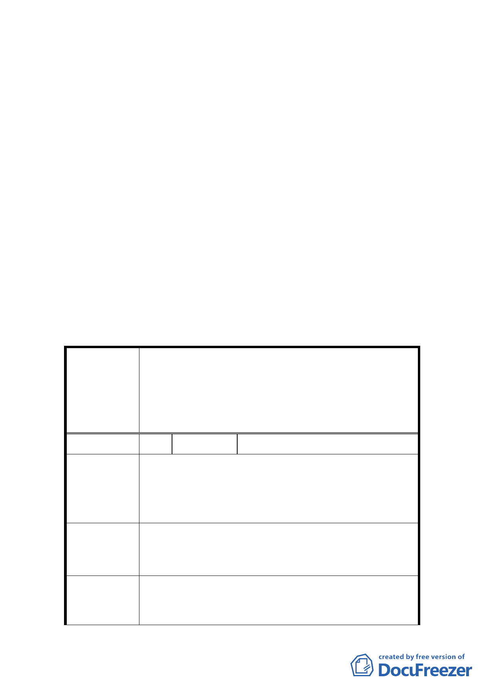

獎勵樓地板面積」，以避免與台北好好看之容積獎勵重複申
請。
六、本案新劃定之更新地區範圍維持原公展範圍，與計畫範圍一
致，以確保周邊計畫道路開闢，並於計畫案內註明本更新地
區應一次開闢完成，以符「臺北好好看」政策目的。
七、基地北側、西側鄰接變更後 6 米計畫道路部分，未來建築時
應退縮 2 米以上（補足 8 米）供作車行之使用。
八、有關涉及好好看辦理年期限制部分，將由市府採通案方式處
理。
九、建議本案未來開發能建立一「臺北好好看」之典範與地標。
十、其餘部分依專案小組審查意見、市府本次提會審議資料及會
議當日所送補充資料內容修正後通過。
十一、公民或團體所提意見審決如後附綜理表
臺北市都市計畫委員會公民或團體所提意見綜理表
案名
編號
陳情理由
建議辦法
專案小組
審查意見
變更臺北市中正區河堤段六小段 581-1 地號等 62 筆土
地道路用地、第 2 種商業區、第 3-1 種住宅區及第 3 種
住宅區為道路用地、第 2 種商業區（特）、第 3-1 種住
宅區（特）及第 3 種住宅區（特）暨劃定為都市更新地
區細部計畫案
１ 陳情人 莊自立
茲因目前本計畫之範圍是由三宗基地整合而成。目前臨
廈門街之商業區使用強度因道路寬度之原因僅使用 500
％，而臨水源快速道路則為 630％，故依據現行土管之
規定，其商業區使用強度為 538.3％
未來為配合台北好好看計畫之參與及開發，而將三宗基
地合併為一宗作為整體開發，故建議整區商業區容積可
依據臨 30m 水源快速道路之基礎，准予全部使用 630％。
同意本案商業區容積率可依街廓整併後臨最寬道路寬
度（30m 水源快速道路）計算容積率為 630％，惟需辦
理回饋。
- 42 -